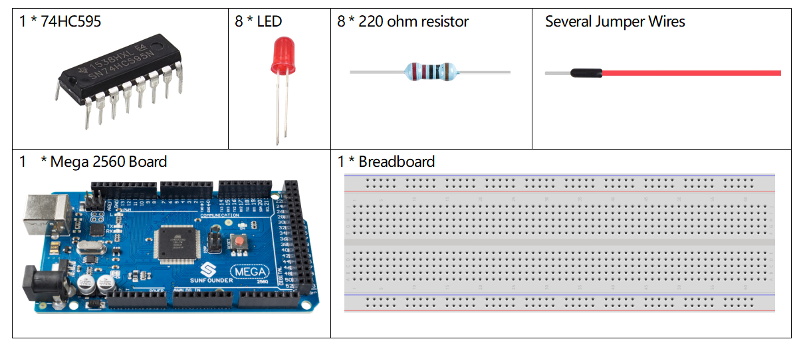
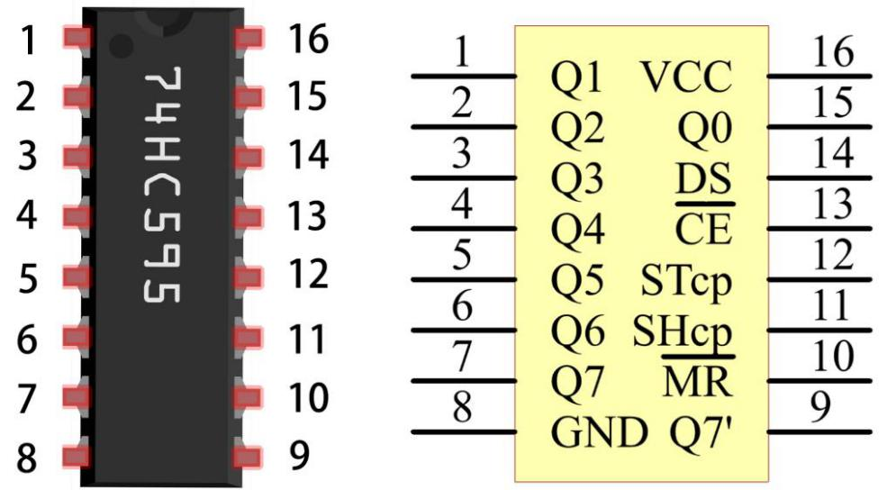
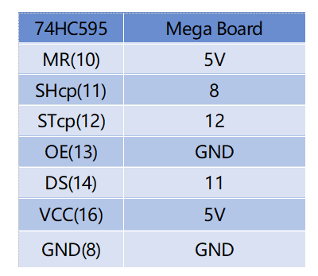

2.6 74HC595¶
Überblick¶
In diesem Kurs lernen Sie die Verwendung von 74HC595. 74HC595 besteht aus einem 8-Bit-Schieberegister und einem Speicherregister mit parallelem Ausgang mit drei Zuständen. Es wandelt den seriellen Eingang in den parallelen Ausgang um, sodass Sie den E / A-Port der MCU speichern können.
Erforderliche Komponenten¶
Komponenteneinführung¶
Wenn MR (Pin 10) hoch und OE (Pin 13) niedrig ist, werden Daten an der ansteigenden Flanke von SHcp eingegeben und gelangen über die ansteigende Flanke von SHcp in das Speicherregister. Wenn die beiden Takte miteinander verbunden sind, ist das Schieberegister immer einen Impuls früher als das Speicherregister. Im Speicherregister befinden sich ein serieller Shift-Eingangspin (Ds), ein serieller Ausgangspin (Q) und eine asynchrone Reset-Taste (niedriger Pegel). Das Speicherregister gibt einen Bus mit einem parallelen 8-Bit und in drei Zuständen aus. Wenn OE aktiviert ist (niedriger Pegel), werden die Daten im Speicherregister an den Bus ausgegeben.
Pins von 74HC595 und ihre Funktionen:
Q0-Q7: Parallele 8-Bit-Datenausgangspins, mit denen 8 LEDs oder 8 Pins der 7-Segment-Anzeige direkt gesteuert werden können.
Q7 ‚: Serienausgangspin, verbunden mit DS eines anderen 74HC595, um mehrere 74HC595 in Reihe zu schalten
MR: Reset-Pin, auf niedrigem Pegel aktiv;
SHcp: Zeitsequenz-Eingabe des Schieberegisters. Bei der ansteigenden Flanke bewegen sich die Daten im Schieberegister kontinuierlich um ein Bit, dh die Daten in Q1 bewegen sich zu Q2 und so weiter. Während der fallenden Flanke bleiben die Daten im Schieberegister unverändert.
STcp: Zeitsequenz-Eingabe des Speicherregisters. Bei steigender Flanke werden Daten im Schieberegister in das Speicherregister verschoben.
OE: Ausgangsfreigabepin, aktiv auf niedrigem Pegel.
DS: Serieller Dateneingangspin
VCC: Positive Versorgungsspannung
GND: Boden
Fritzing Circuit¶

In diesem Beispiel verwenden wir 74HC595 zur Steuerung der LED. Geben Sie jedem Datenausgangspin （Q0-Q7） einen 220-Ohm-Widerstand und verbinden Sie ihn dann mit der LED. Der Schaltplan lautet wie folgt:
Schematische Darstellung¶

Code¶
Wenn Sie die Codes auf die Mega2560-Karte hochgeladen haben, leuchten die LEDs nacheinander auf.
Code-Analyse¶
Deklarieren Sie ein Array und speichern Sie mehrere 8-Bit-Binärzahlen, mit denen der Arbeitszustand der acht von 74HC595 gesteuerten LEDs geändert wird.
int datArray[] = {B00000000, B00000001, B00000011, B00000111, B00001111, B00011111, B00111111, B01111111, B11111111};
Stellen Sie STcp zuerst auf niedrigen und dann auf hohen Pegel ein. Es wird ein Anstiegsflankenimpuls von STcp erzeugt.
digitalWrite(STcp,LOW);
Mit shiftOut () wird ein Datenbyte bitweise verschoben, dh ein Datenbyte in datArray [num] wird mit dem DS-Pin in das Schieberegister verschoben. MSBFIRST bedeutet, sich von hohen Bits zu bewegen.
shiftOut(DS,SHcp,MSBFIRST,datArray[num]);
Nachdem digitalWrite (STcp, HIGH) ausgeführt wurde, befindet sich STcp an der ansteigenden Flanke. Zu diesem Zeitpunkt werden die Daten im Schieberegister in das Speicherregister verschoben.
digitalWrite(STcp,HIGH);
Ein Datenbyte wird nach 8 Mal in das Speicherregister übertragen. Dann werden die Daten des Speicherregisters an den Bus (Q0-Q7) ausgegeben. Zum Beispiel leuchtet durch Ausschalten (B00000001) die von Q0 gesteuerte LED auf und schaltet die von Q1 bis Q7 gesteuerte LED aus.
Phänomen Bild¶